บท 04 ให้ ทีม · บทนี้ให้ แผน ว่าใครทำอะไร ก่อน-หลัง เมื่อไร
| คำถาม | ถ้าตอบไม่ได้ |
|---|---|
| งานมีกี่ชิ้น ชิ้นไหนต้องรอชิ้นไหน | สั่งงานผิดลำดับ |
| แต่ละชิ้นควรใช้สกิลไหน | ใช้บัญชีแพงกับงานง่าย หรือไม่มีใครตรวจงานสำคัญ |
| ชิ้นไหนให้บัญชีไหน เมื่อไร | บัญชีโควตาน้อยรับงานใหญ่จนค้าง |
| ทั้งโปรเจกต์จะเสร็จเมื่อไร | ไม่รู้ว่าเพิ่มบัญชีแล้วเร็วขึ้นไหม |
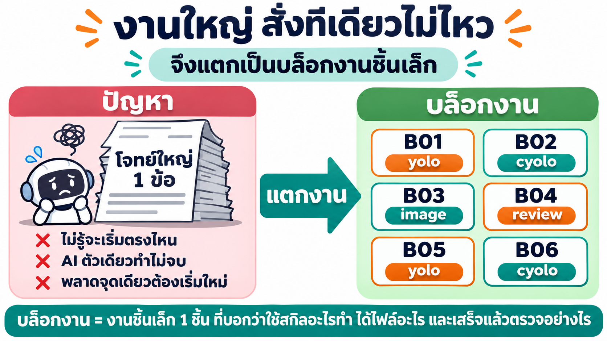
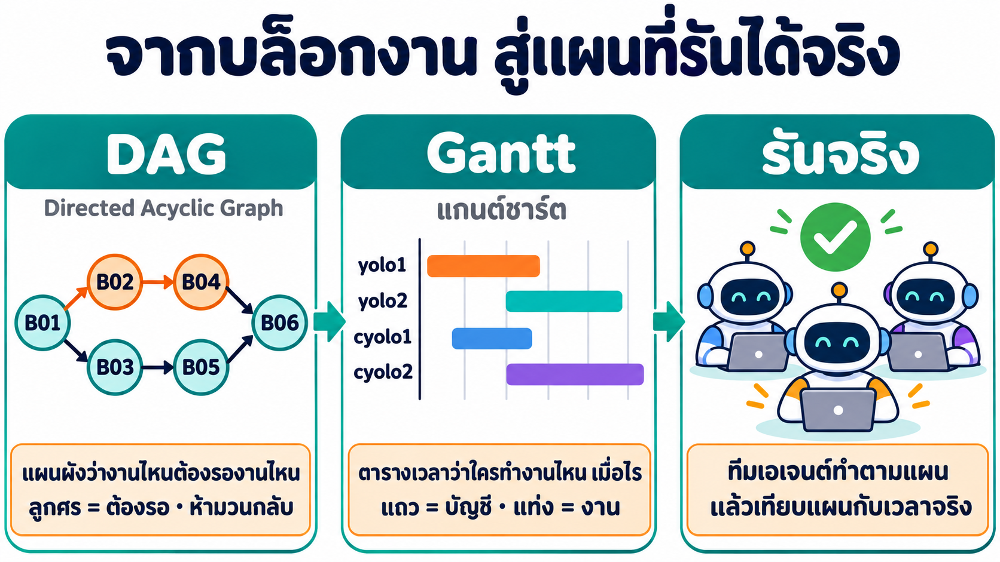
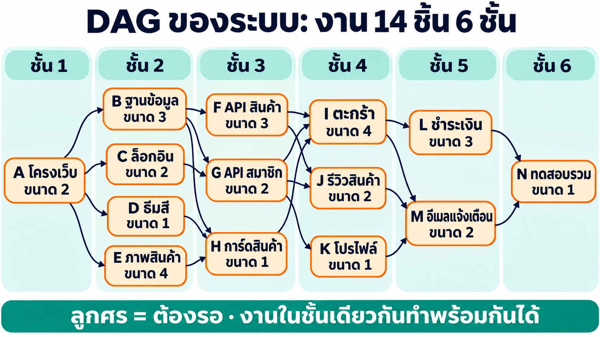
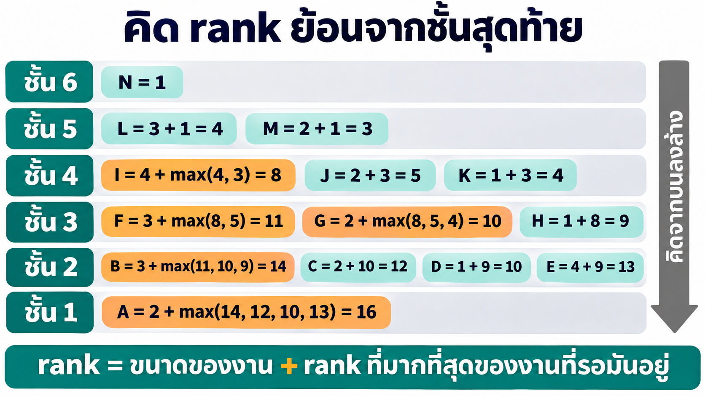
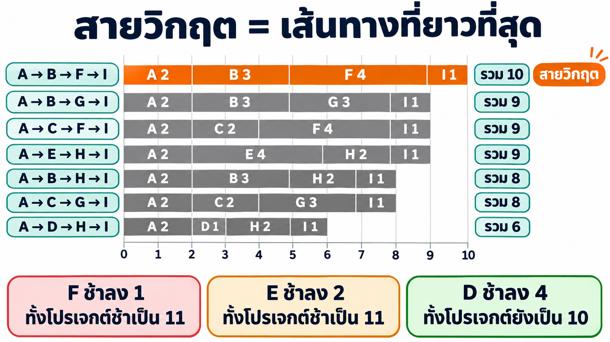
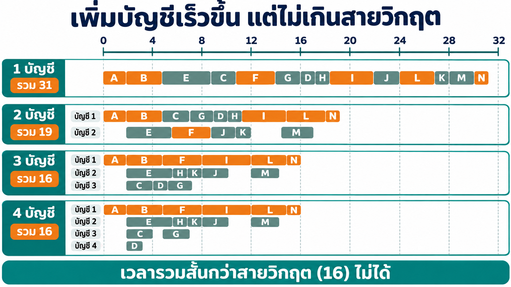
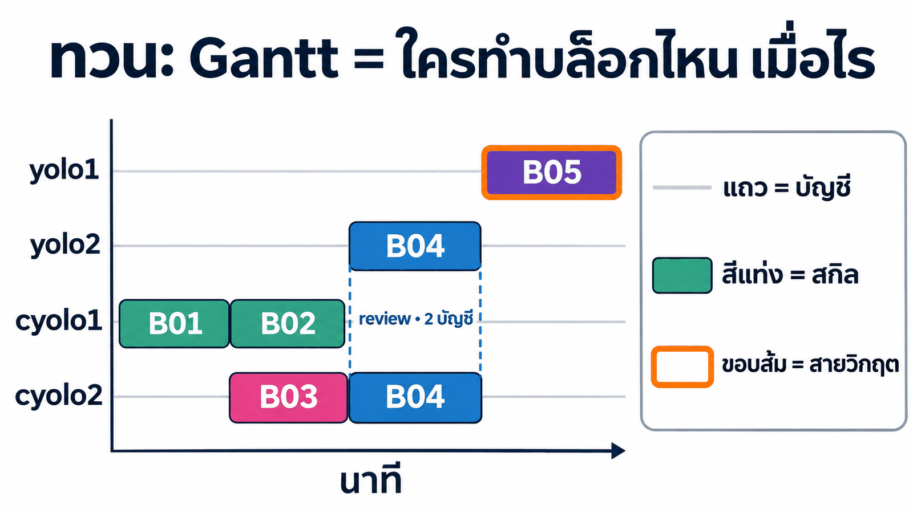
แต่ละบล็อกระบุ skill + difficulty + ไฟล์ผล + เกณฑ์เสร็จ
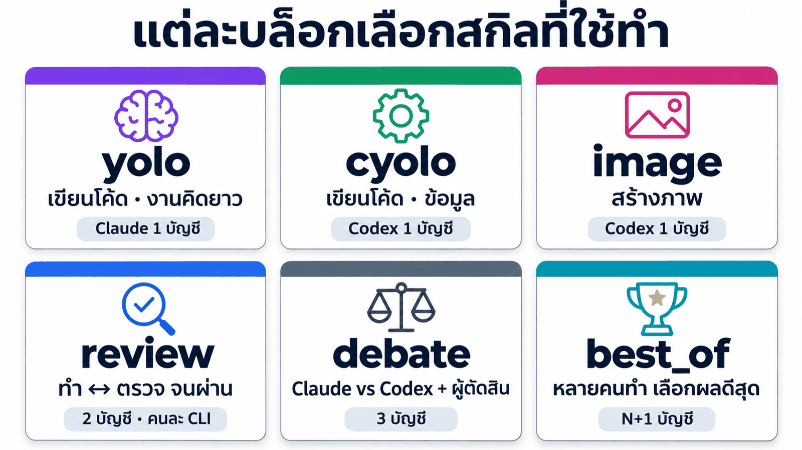
| skill | ใช้เมื่อ | agent-team ทำจริง | บัญชี |
|---|---|---|---|
🧠 yolo | เขียนโค้ด/เอกสาร งานคิดยาว | งานเดี่ยวฝั่ง Claude | 1 |
⚙️ cyolo | โค้ด/ข้อมูลตรงไปตรงมา | งานเดี่ยวฝั่ง Codex | 1 |
🖼️ image | สร้างภาพ | งานภาพ (Codex เสมอ) | 1 |
🔍 review | งานสำคัญต้องมีคนตรวจ | ผู้ทำ ↔ ผู้ตรวจคนละ CLI | 2 |
⚖️ debate | ตัดสินใจที่มีถูก/ผิด | Claude vs Codex + ผู้ตัดสิน | 3 |
🏆 best_of | งานสร้างสรรค์ | หลายคนทำ + ผู้ตัดสิน | N+1 |
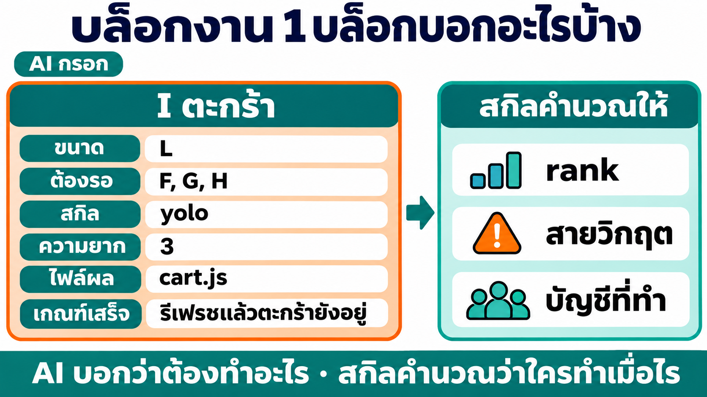
AI = สมอง แตกบล็อก · dagplan.py = มือ วาด DAG/Gantt · agent-team = ทีม รันจริง
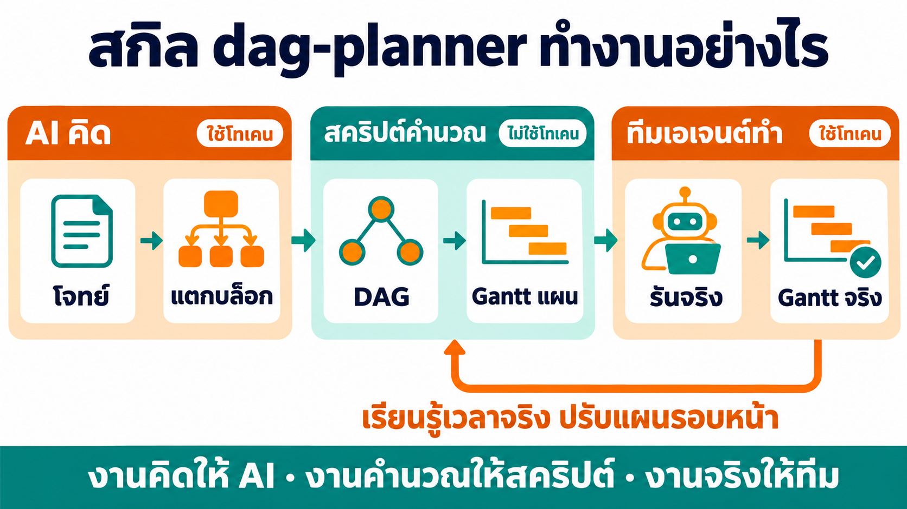
| ใคร | ทำอะไร | โทเคน |
|---|---|---|
| AI = สมอง (Claude Code app) | อ่านโจทย์ แตกบล็อก เลือกสกิลและความยาก | ใช้ |
| dagplan.py = มือ | ตรวจกราฟ · rank · DAG · KC-QUEST แจกบัญชี · Gantt · export · report | ไม่ใช้ |
| agent-team = ทีม | รันแต่ละบล็อกด้วยสกิลที่ระบุ บนบัญชีจริง | ใช้ |
| คำสั่ง | ผล |
|---|---|
doctor | เครื่องพร้อมไหม |
dag | ตรวจบล็อก + rank + dag.png |
plan | KC-QUEST → gantt-plan.png · PLAN.md |
export · run | graph.json → agent-team รันจริง |
report | gantt-actual · compare · REPORT.md · calib.json |
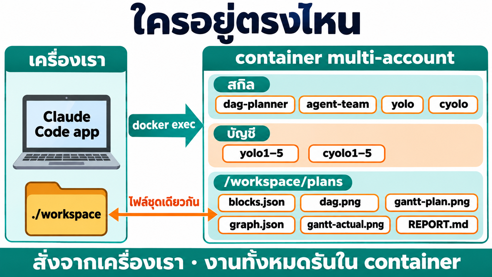
report เก็บ k แยกตามสกิลใน calib.json · plan ครั้งถัดไปคูณเวลาด้วย k (KC-QUEST ขั้น ⑥ เรียนรู้)
export ส่งเป็นฝั่ง yolo/cyolo ไม่ผูกบัญชี agent-team เลือกบัญชีว่างเอง report แสดงส่วนต่าง
สร้างสกิลจากสเปก → ติดตั้ง → วางแผนเหมียวช็อป → รันจริง → what-if
| ขั้น | เวลารันจริง |
|---|---|
| 1 สร้างสกิลจากสเปก | ~16.6 นาที |
| 2 ติดตั้งด้วยการคัดลอก | 117 วินาที |
| 3 วางแผนเหมียวช็อป | 82 วินาที |
| 4 รันแผนจริง | 230 วินาที (ทีม 2.8 นาที) |
| 5 what-if ด้วย k ใหม่ | 83 วินาที |
05_DAG_Planner/ ├── prompt_dag_skill_spec.md ← สเปก (input 1) ├── tools/ ← ตัววางแผนเดิม (input 2) └── _solution/ ← สกิล · TEST-REPORT · แผน meow-shop
ต้องมี container multi-account + สกิลบท 04 · ล็อกอินอย่างน้อย 2 บัญชี Claude + 2 บัญชี Codex
input: prompt_dag_skill_spec.md + tools/ (ตัววางแผนเดิม) + สกิลบท 04 ใน container (~16.6 นาที)
ช่วยสร้างสกิล dag-planner ที่ทำให้ AI วางแผนงานเป็น DAG + Gantt โดยแต่ละบล็อกงานใช้สกิลของบท 04 แล้วส่งแผนให้ทีมเอเจนต์รันจริงได้ ทำในโฟลเดอร์นี้ ใช้คำสั่ง docker ได้ แต่ห้ามลบ หยุด หรือสร้าง container / volume ใหม่ ห้ามแตะ credential และห้ามล็อกอินแทนผม วัตถุดิบ - ./prompt_dag_skill_spec.md = สเปกของสกิล ทุกข้อต้องเป็นจริง - ./tools/planner.py และ ./tools/orch.py = ตัววางแผนชุดเดิม (DAG · Gantt · KC-QUEST) ใช้เป็นแหล่งความรู้ ห้ามคัดลอกทั้งไฟล์ - container multi-account ที่กำลังรัน = ที่ทดสอบจริง มีสกิล yolo · cyolo · agent-team ของบท 04 อยู่แล้ว (อ่าน SKILL.md ของสกิลเหล่านั้นใน container ก่อนใช้) สร้างไว้ใน ./skills/dag-planner (นอก container = ต้นฉบับที่เก็บสำรอง) ทดสอบ: คัดลอกโฟลเดอร์ไปวางที่ shared ของทั้งสองฝั่งใน container แล้วทดสอบทุกข้อในหัวข้อ "ทดสอบ" ของสเปก ใช้บัญชีอย่างประหยัด (difficulty 1 กับงานทดสอบ) ข้อที่ต้องใช้บัญชีที่ไม่พร้อม = SKIP เขียน ./TEST-REPORT.md (นอกโฟลเดอร์ skills) แล้วสรุปเป็นตารางสั้น ๆ: ผลทดสอบ ไฟล์ที่สร้าง และเวลาที่ใช้ แล้วหยุด
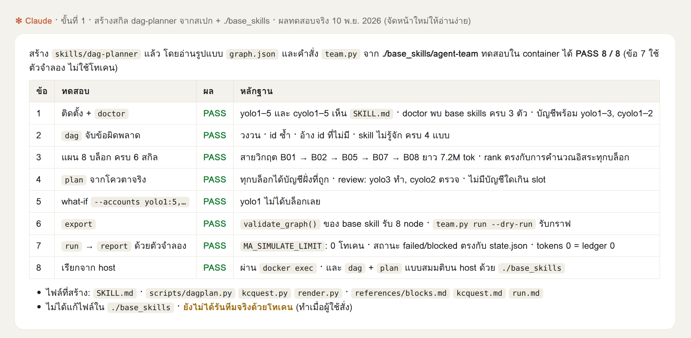
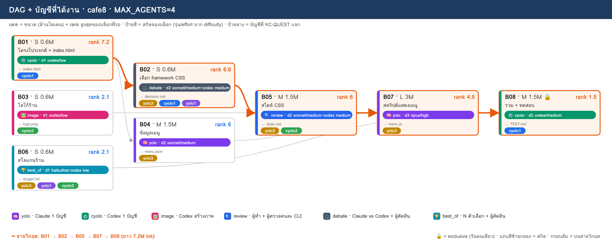
skills/dag-planner/ ├── SKILL.md ← ตาราง "ต้องการ → คำสั่ง" · ขั้นตอน · กติกาแตกบล็อก · ตารางเลือกสกิล · เรียกจาก host ├── scripts/ ← dagplan.py (คำสั่งหลัก) · kcquest.py (KC-QUEST ที่ดึงจาก orch.py) · render.py (วาด DAG · Gantt · compare) └── references/ ← blocks.md (ฟิลด์ + ตัวอย่าง 8 บล็อก) · kcquest.md (สูตรย่อ) · run.md (รันจริงและรายงาน)
เฉลยอยู่ที่ _solution/skills/dag-planner/
คัดลอก dag-planner ลง shared/skills ทั้งสองฝั่ง · ไม่ต้องรันสคริปต์ติดตั้ง (117 วินาที)
ติดตั้งสกิลจาก ./skills/dag-planner ลง container multi-account ด้วยการคัดลอกโฟลเดอร์อย่างเดียว - คัดลอกโฟลเดอร์ dag-planner ไปวางที่ /root/ai-accounts/.Claude/shared/skills และ /root/ai-accounts/.Codex/shared/skills ใน container - เปิดแต่ละบัญชีหนึ่งครั้งด้วย yoloN --version และ cyoloN --version (wrapper จะเชื่อมสกิลให้แต่ละบัญชีเอง) - ตรวจว่าทุกบัญชี yolo1–5 และ cyolo1–5 มองเห็น dag-planner/SKILL.md แล้วรันคำสั่ง doctor ของสกิล สรุปเป็นตาราง ฝั่ง | มองเห็นสกิล · ผล doctor แล้วหยุด
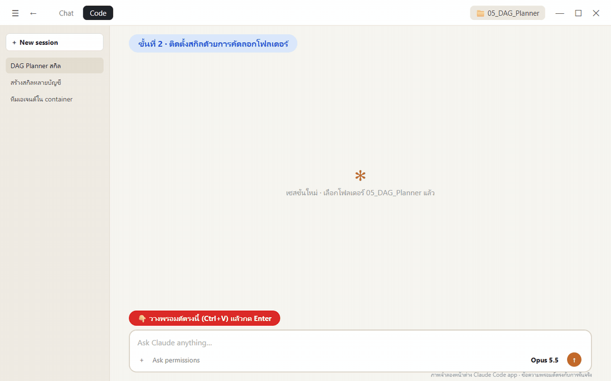
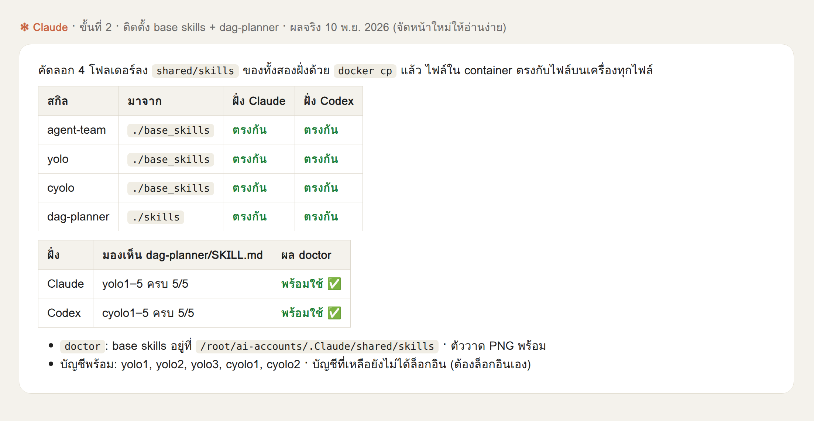
ใช้สกิลที่เตรียมไว้: เปลี่ยน ./skills/dag-planner เป็น ./_solution/skills/dag-planner · หรือลากวางใน JupyterLab แบบบท 04
Claude Code app เจอสกิล dag-planner เอง → บล็อกงาน + DAG + Gantt แผน (82 วินาที)
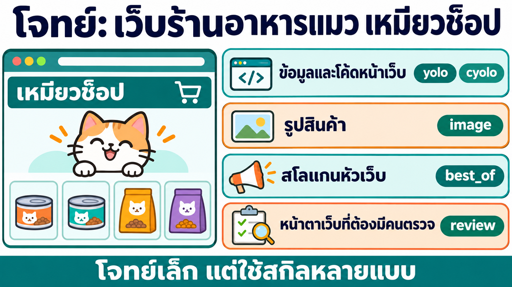
โจทย์: ทำหน้าเว็บร้านอาหารแมว "เหมียวช็อป" แบบหน้าเดียว (HTML + CSS + JavaScript ไม่ต้องมี server) มีสินค้า 6 รายการพร้อมรูป ตะกร้าสินค้าที่จำได้หลังรีเฟรช และสโลแกนหัวเว็บ แล้วทดสอบว่าใช้งานได้จริง ชื่อแผน: meow-shop จำนวน agent สูงสุด: 4 ใช้ทีมเอเจนต์ใน container multi-account วางแผนงานนี้ ทำงานใน container ผ่าน docker exec เท่านั้น ห้ามแก้ไฟล์ตั้งค่า ห้ามล็อกอินแทนฉัน ก่อนเริ่ม ดูว่าใน container มีสกิลที่ช่วยงานนี้ได้หรือไม่ (/root/ai-accounts/.Claude/shared/skills) ถ้ามีให้อ่านและใช้ 1. แตกโจทย์เป็นบล็อกงาน 6–10 บล็อก แต่ละบล็อกบอกสกิลที่ใช้ทำ ความยาก ไฟล์ผล และเกณฑ์เสร็จ 2. วาด DAG แล้ววางแผนว่าบล็อกไหนให้บัญชีไหน เมื่อไร (Gantt) จากโควตาจริง ยังไม่ต้องรันงานจริง ตอบภาษาไทยสั้น ๆ: ตาราง บล็อก | ชื่อ | สกิล | ความยาก | ต้องรอ | rank · สายวิกฤตพร้อมเหตุผล 1 บรรทัด · ตาราง บล็อก | บัญชี | เริ่ม–จบ (นาที) · path ของ dag.png และ gantt-plan.png
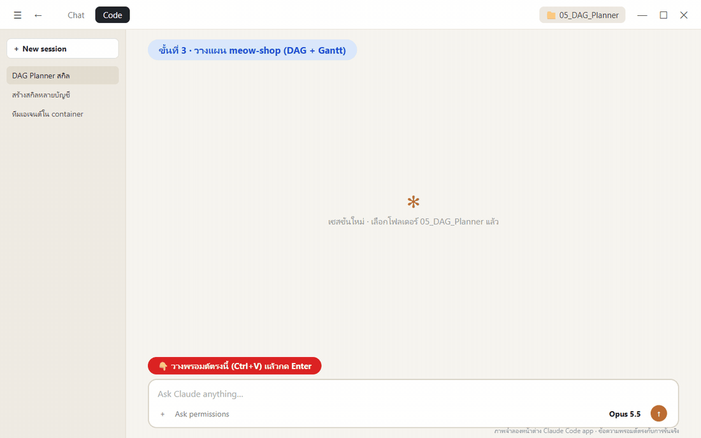
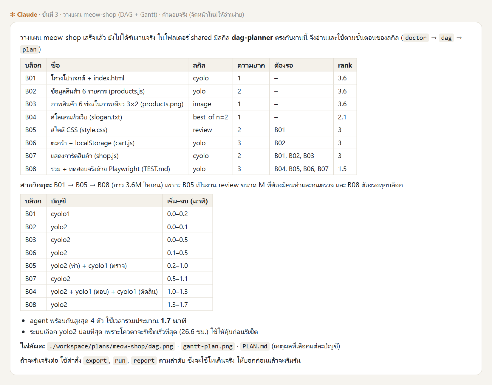
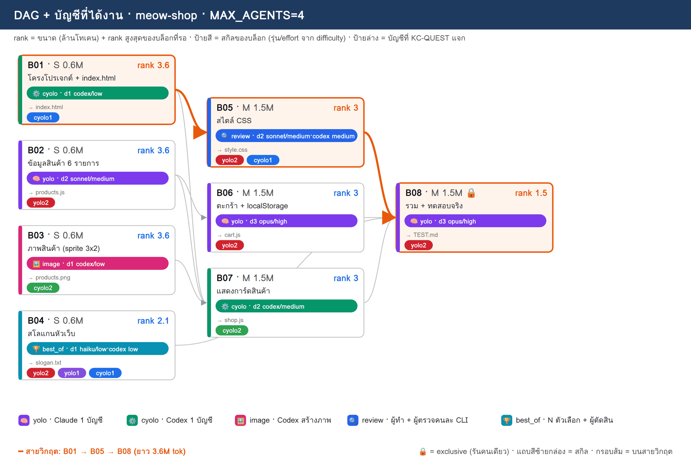
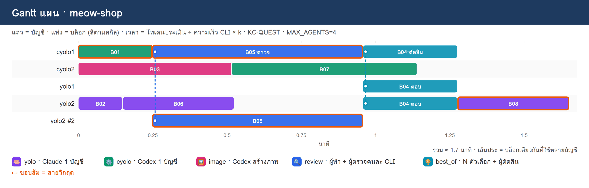
export → run → report · ทีมรันจริง 2.8 นาที · เสร็จ 8/8 บล็อก
ชื่อแผน: meow-shop รันแผนนี้จริงด้วยทีมเอเจนต์ใน container multi-account ทำงานผ่าน docker exec เท่านั้น ห้ามแก้ไฟล์ตั้งค่า ห้ามล็อกอินแทนฉัน - ใช้แผนที่วางไว้แล้ว (ไม่ต้องวางแผนใหม่) ส่งให้ agent-team รันจนจบด้วยสกิล dag-planner แล้วทำรายงานเทียบแผนกับของจริง - ถ้าบล็อกใดล้ม ให้รายงานตามจริง ห้ามแก้แทนหรือเดาผล ตอบภาษาไทยสั้น ๆ: ตาราง บล็อก | สกิล | บัญชีแผน → จริง | นาทีแผน → จริง | tokens | สถานะ · เวลารวมแผนเทียบของจริง · path ของ gantt-actual.png, compare.png และหน้าเว็บที่ได้
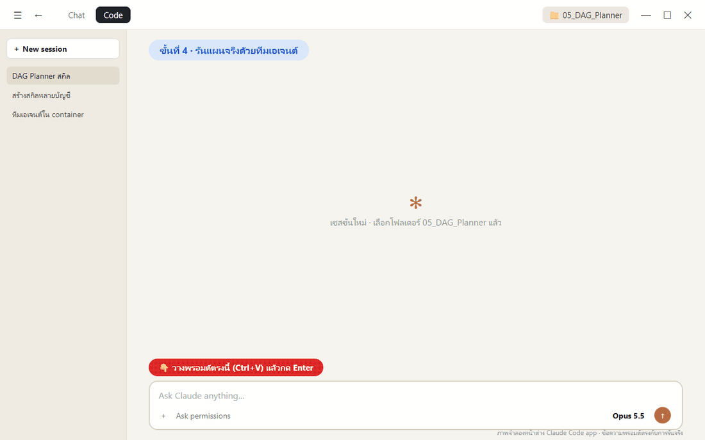
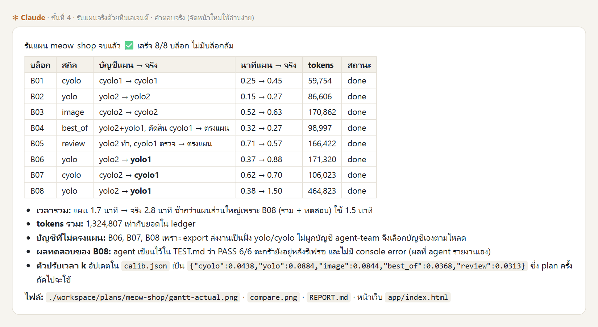
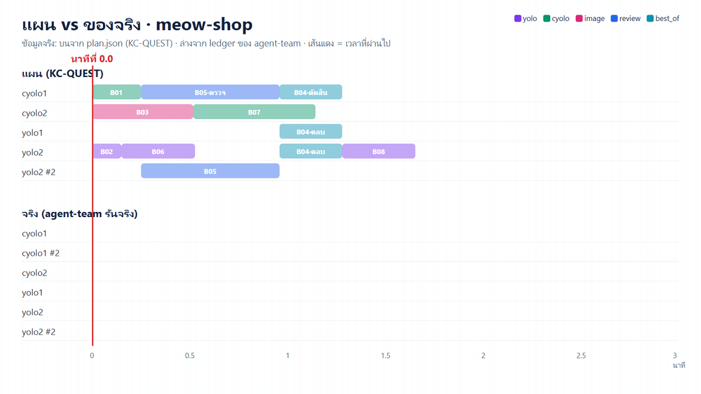
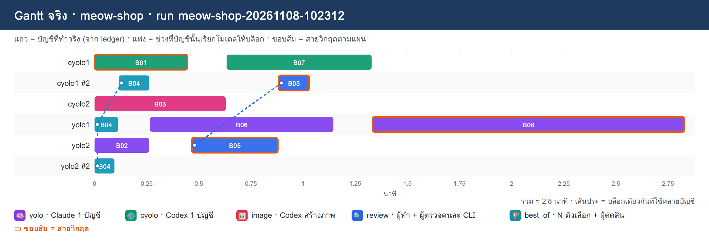
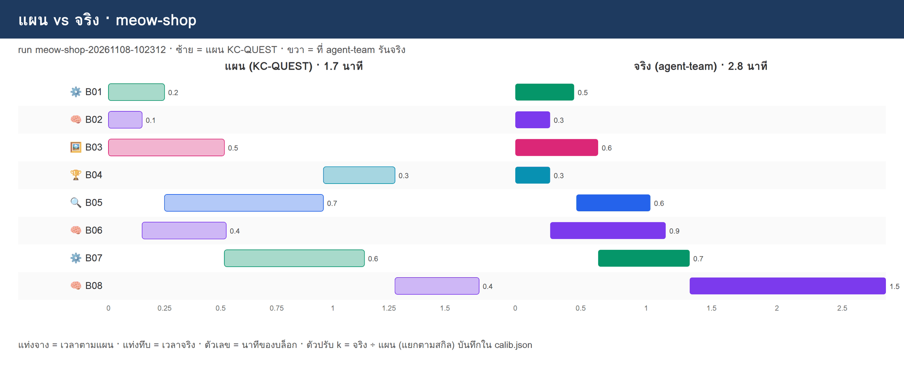
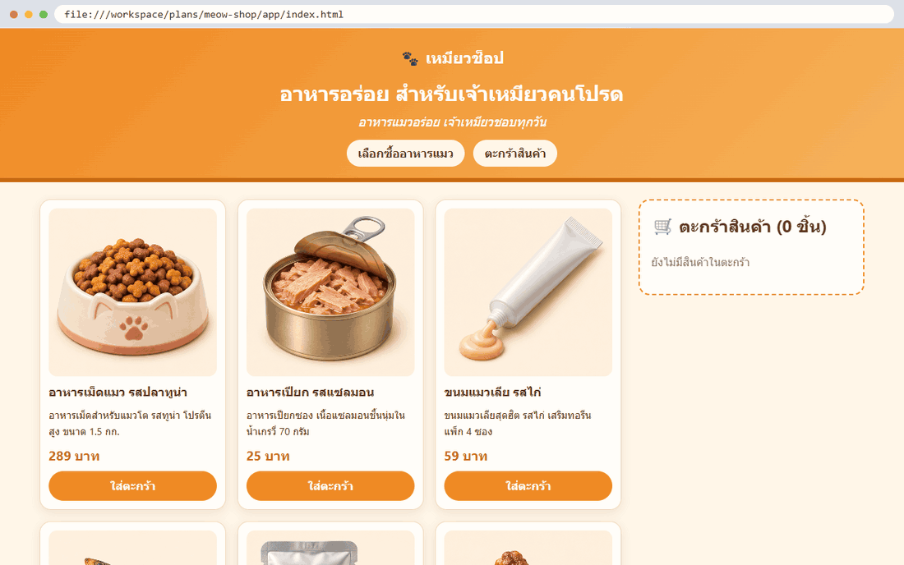
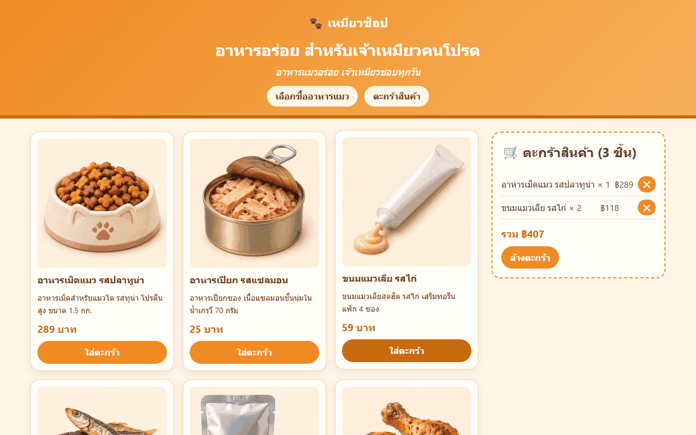
B08 บันทึกว่า รูปบางช่องไม่ตรงชื่อสินค้า เช่น "อาหารเปียก รสแซลมอน" ได้รูปกระป๋องทูน่า
plan ใหม่ 3 แบบ ไม่รันทีมจริง ไม่ใช้โทเคนของทีม (83 วินาที)
ชื่อแผน: meow-shop วางแผนใหม่ 2 แบบ (ยังไม่รันจริง) โดยใช้ตัวปรับ k ที่ได้จากการรันจริงรอบที่แล้ว แล้วเทียบกับแผนเดิม ก. จำนวน agent สูงสุด 2 ข. yolo1 เหลือโควตาแค่ 5% ทำผ่าน docker exec ใน container multi-account ด้วยสกิล dag-planner ตอบเป็นตาราง แบบ | เวลารวม (นาที) | บล็อกบนสายวิกฤตไปบัญชีไหน | อะไรเปลี่ยน พร้อม path ของ gantt ทั้ง 2 แบบ
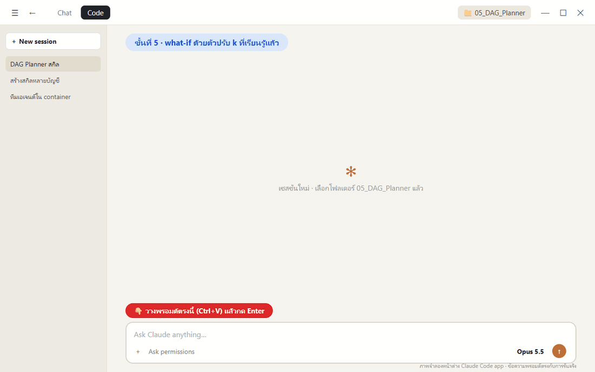
| แบบ | เวลารวม | สิ่งที่เห็น |
|---|---|---|
| แผนเดิม (k จากขั้นที่ 1) | 1.7 นาที | ประเมินต่ำไป |
| k ใหม่ · agent 4 | 2.8 นาที | เท่ากับเวลาจริง |
| ก. agent สูงสุด 2 | 2.4 นาที · เสร็จแค่ 6/8 | B04 best_of ต้องใช้ 3 บัญชี → ไม่มีใครรับ · B08 ติดตาม |
| ข. yolo1 เหลือ 5% | 2.9 นาที | yolo1 ไม่ได้บล็อกเลย สายวิกฤตไม่กระทบ |
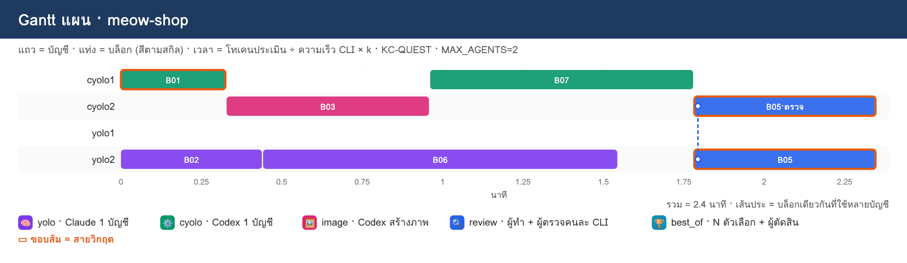
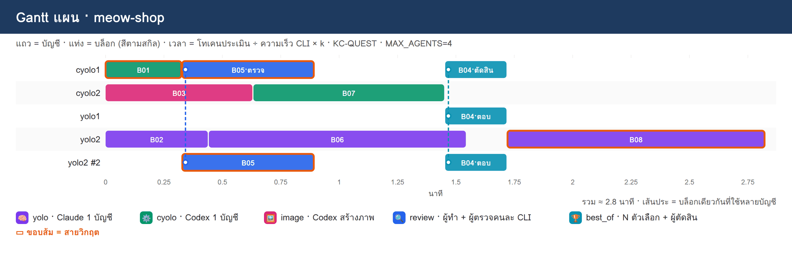
| บท 04 | บท 05 | |
|---|---|---|
| ใครเขียน graph.json | คน / AI เขียนเอง | export จาก blocks.json |
| แต่ละงานใช้สกิลอะไร | ระบุเองทีละ node | ทุกบล็อกมี skill + difficulty |
| ใครทำบล็อกไหน เมื่อไร | ไม่รู้จนกว่าจะรัน | Gantt แผน (KC-QUEST + โควตาจริง) |
| เสร็จเมื่อไร | ไม่รู้ | 1.7 → จริง 2.8 → แผนใหม่ 2.8 นาที |
| what-if | ต้องรันจริง | plan ใหม่ ไม่ใช้โทเคนของทีม |
แผนแรกต่างจากจริงได้มาก calib.json ช่วยให้แม่นขึ้น
สกิลให้ถามผู้ใช้ก่อน run และเริ่มจากความยากต่ำ
export ส่งเป็นฝั่ง ถ้าจะห้ามบัญชีไหนให้ตัดจาก --accounts
ตัด dependency เฉพาะงานที่ไม่ใช้ข้อมูลของกันจริง
best_of n=2 ใช้ 3 บัญชีพร้อมกัน agent สูงสุดต้องไม่ต่ำกว่านั้น
ก่อนรันจริง ไม่เช่นนั้น Claude อาจวางแผนใหม่ทับ
D=/root/ai-accounts/.Claude/shared/skills/dag-planner/scripts/dagplan.py python3 $D doctor # เครื่องพร้อมไหม python3 $D dag meow-shop --blocks blocks.json # ตรวจบล็อก + rank + dag.png python3 $D plan meow-shop --max-agents 4 # Gantt แผนจากโควตาจริง python3 $D plan meow-shop --accounts yolo1:5,yolo2,cyolo1,cyolo2 # what-if (สมมติโควตา) python3 $D export meow-shop && python3 $D run meow-shop --detach # รันจริง (ใช้โทเคน) python3 $D report meow-shop # Gantt จริง + แผน vs จริง + calib.json
docker exec multi-account cat /root/ai-accounts/.Claude/shared/skills/dag-planner/SKILL.md docker exec -i multi-account python3 /root/ai-accounts/.Claude/shared/skills/dag-planner/scripts/dagplan.py dag meow-shop --blocks - < blocks.json